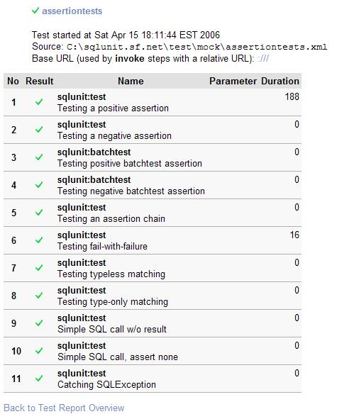

WebTestRecorder
WebTestRecorderSQLUnit Integration
SQLUnit is a technology for testing databases. It can be used for testing stored procedures within a database or if you have a data-driven website, it can be used in conjunction with WebTest to ensure that the web and database parts of the application are working well together.
Here are some sample scenarios where SQLUnit may be useful for your WebTest-tested applications:
- Integration Test Pre-condition Checking
- You might be about to call a WebTest test which assumes a particular user is already valid within your system. SQLUnit could help you check a precondition such as the user exists and is not disabled.
- Integration Test Post-condition Checking
- You can check integration between your web application and your model. E.g. create a new user using a form driven via WebTest and then check that the newly created user now exists in the database.
- Database Data Manipulation and/or Cleanup
- You may wish to run some tests using temporary data. You could create a user using SQLUnit, run your WebTest steps, then remove the user again with SQLUnit.
SQLUnit supports several reporting formats including an XML format compatible with WebTest's reporting format, so you can happily mix the two tools and generate combined reporting.
Here is an example of how you might invoke the SQLUnit selftests (using WebTest formatting) from the command-line:
Here is an example of what the resulting report might look like:

Here is an example of how you might use the SQLUnit ant task from within your WebTest file:
<taskdef name="sqlunit" classname="net.sourceforge.sqlunit.ant.SqlunitTask"/>
...
<-- Testing SQLUnit using flat form of sqlunit call -->
<target name="sqlunit-flat">
<sqlunit testfile="${testfile}" haltOnFailure="true" debug="${debug}"
logfile="${result.file}" logformat="${log.format}" />
</target>
<-- Testing SQLUnit using nested form of sqlunit call -->
<target name="sqlunit-nested">
<sqlunit haltOnFailure="false" debug="${debug}"
logfile="${result.file}" logformat="${log.format}">
<fileset dir="${test.dir}/${testdir}">
<include name="**/*.xml" />
</fileset>
</sqlunit>
</target>
...
<-- reporting -->
<target name="canoo2html">
<delete file="${output.dir}/${output.file}.html" />
<xslt in="${result.file}"
out="${output.dir}/${output.file}.html"
style="${etc.dir}/${webtest.style}.xsl" />
</target>
...
Here is an example of what your SQLUnit test file might look like:
<!DOCTYPE sqlunit SYSTEM "file:sqlunit/lib/sqlunit.dtd" [
<!ENTITY connection SYSTEM "file:sqlunitConnectionConfig.xml">
<!ENTITY data SYSTEM "file:sqlunitTestData.xml">
]>
<sqlunit>
&connection;
<setup>
&data;
</setup>
<test name="Looking up New Member created from Register page">
<sql>
<stmt>select Firstname,Surname from Client where UserID=?</stmt>
<param id="1" type="VARCHAR" inout="in">${test.newuser.id}</param>
</sql>
<result>
<resultset id="1">
<row id="1">
<col id="1" type="VARCHAR">Dummy</col>
<col id="2" type="VARCHAR">User</col>
</row>
</resultset>
</result>
</test>
<teardown>
<sql>
<stmt>delete from Client where UserID=?</stmt>
<param id="1" type="INTEGER" inout="in">${test.newuser.id}</param>
</sql>
</teardown>
</sqlunit>